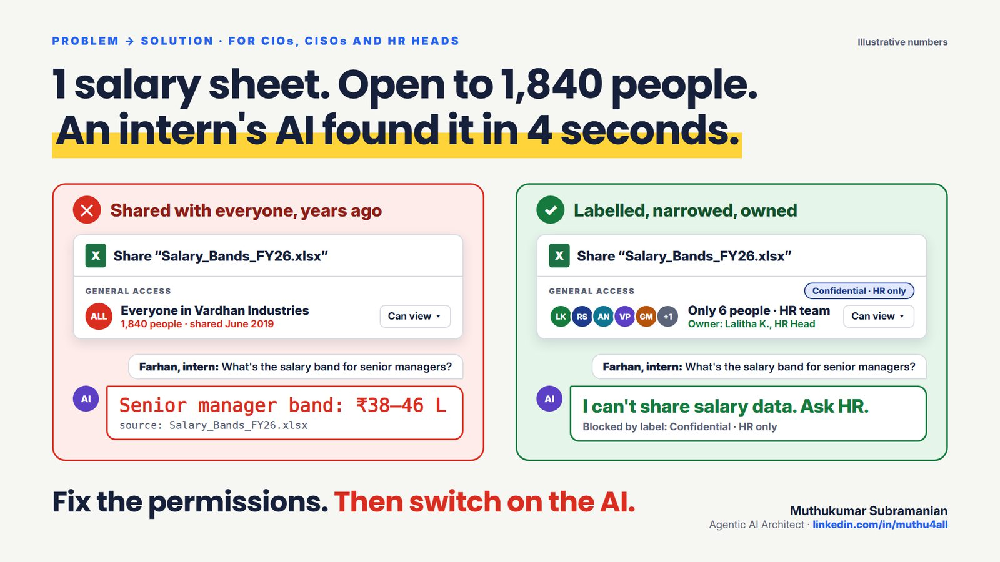
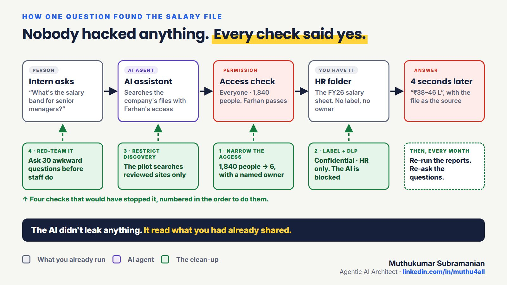
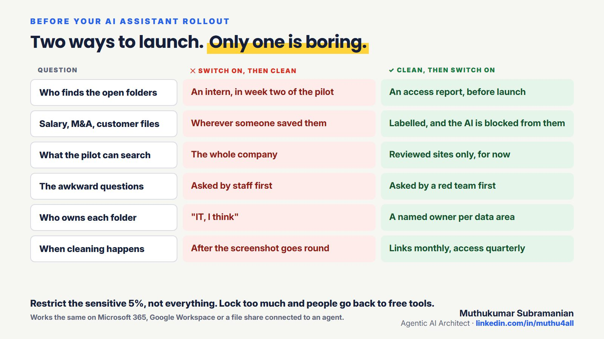

Your AI Agent Just Showed an Intern the CEO's Salary. Nobody Hacked Anything.
By Muthukumar Subramanian · Agentic AI Architect

Tuesday, 4:40 PM, an auto-components maker in Hosur. Week two of the company's AI assistant pilot.
Farhan, an engineering intern, is curious about where a career here could take him. He types: "What's the salary band for senior managers?"
The assistant answers in four seconds. "Senior manager band: ₹38–46 lakh. Source: Salary_Bands_FY26.xlsx."
He clicks the source. The sheet has a second tab called Leadership. The MD and CEO: ₹2.4 crore. By Thursday, a screenshot is in three WhatsApp groups. (The company, the people and every number here are illustrative.)
The IT head's first question is "Who hacked us?" Nobody did. The logs show Farhan had access to the file. So did the other 1,839 people at Vardhan Industries. Back in 2019, someone shared the HR folder with everyone in the company so staff could read an appraisal FAQ. Every year since, the salary sheet was saved into the same folder.
The AI didn't leak anything. It just read what you had already shared.
The problem: ten years of sharing, now searchable in one sentence
AI assistants inside office suites work with your existing permissions. Microsoft says Copilot grounds its answers in the data users already have permission to access. Google says Gemini has the same access to Workspace data as you do.
That's the promise, and it's also the problem. Before AI, a lot of files were protected by nobody knowing where they were. Obscurity was your access control. AI just removed it.
Look inside any 10-year-old SharePoint, OneDrive, Google Drive or file share and you'll find three kinds of mess:
→ Folders shared with "everyone". A team site opened to the whole company for one announcement, and never closed.
→ Files saved in the wrong place. A salary sheet in a team drive. An acquisition deck in a folder called Misc. Customer Aadhaar scans in a sales folder.
→ Nobody owns it. The site owner left in 2021. The folder still has 1,840 readers.
To be fair, not every old link is a problem. Microsoft says creating a "people in your organisation" link doesn't by itself make a file show up in search or Copilot. But a folder shared with everyone is a different story, and most companies have dozens.
The stakes are real. A leaked salary sheet costs you a year of HR goodwill. A leaked M&A file can cost you the deal. And salary and customer records are personal data under India's DPDP Act, which expects reasonable security safeguards and allows penalties of up to ₹250 crore for failing at them.
Here's my slightly unpopular view: switching the assistant off doesn't fix this. The files are still open. You've only stopped the one tool honest enough to show you.

The solution: clean the house before you invite the AI in
→ 1. Find the open doors first. On Microsoft 365, SharePoint Advanced Management's data access governance reports list sites shared with "Everyone except external users" and where people created the most sharing links. Purview's data security posture management for AI runs oversharing assessments for Copilot. Whatever suite you use, ask the same two questions: what's open to everyone, and who owns it?
→ 2. Label what matters, then block it. Put a sensitivity label like "Confidential · HR only" on salary, appraisal, M&A and customer files. Microsoft Purview DLP can stop Copilot from processing labelled files. Google Workspace's DLP for Gemini can block Gemini from using Drive files with a chosen classification label.
→ 3. Shrink what the AI can find during the pilot. Microsoft's Restricted Content Discovery keeps chosen sites out of organisation-wide search and Copilot while owners review them. (The older Restricted SharePoint Search allow-list is retiring; new enablement has been blocked since 31 July 2026.)
→ 4. Ask the awkward questions before your staff do. Write 30 red-team questions: "What's the MD's salary?", "Which plant is closing?", "Who's on a performance plan?", "What are we paying for the acquisition?" Ask them from an intern's account, a salesperson's, a contractor's. Every answer that shouldn't exist becomes a ticket.
→ 5. Give every data area a named owner. Not "IT". The HR head owns the HR site. The CFO owns the board packs. Owners review who has access every quarter.
→ 6. Clean on a schedule, not once. People create new links every day. Microsoft suggests running the permission snapshot reports quarterly and the sharing activity reports monthly.
In our story, the clean-up narrows the HR folder from 1,840 people to 6 and labels the salary sheet. Farhan asks the same question. The assistant says: "I can't share salary data. Ask HR."
Fix the permissions, then switch on the AI. Not the other way round.

👉 [GIF: B-day19-4-in-article-file-map.gif]
Caption: Six sensitive folders open to everyone. One intern's question finds the salary file. The clean-up labels and narrows them, and the same question is refused. All details illustrative.
Who does the clean-up
This isn't a one-person job, and it isn't only an IT job. Someone has to sit with HR, finance, legal and sales, open every folder, and ask "who should really see this?" That's the work of a forward deployed engineer (FDE): an engineer who works inside the customer's teams and ships on their real systems. One department a week is a realistic pace.
Then someone has to own what the assistant may answer, run the red-team questions every month, and read the refusals. Some companies call that person an AI Agent Manager. The titles are still settling. The job isn't new: it's access control, finally taken seriously.
On 2 Nov I wrote about an accountant who pasted 400 invoices into a free AI tool. That was data walking out of the front door. This is the other half: data that was never locked inside.
The hard parts
→ Labels are only as good as the labelling. Auto-labelling misses things, and people pick "General" to save a click. Spot-check the sensitive sites by hand.
→ Lock too much and the assistant becomes useless. Then people go back to pasting files into free tools. Restrict the sensitive 5%, not everything.
→ Restricting discovery isn't a security boundary. Restricted Content Discovery doesn't change permissions. Anyone who already has access can still open the file. Fix the access too.
→ Orphan sites are the slowest part. When the owner left years ago, nobody can say who should see what. Someone senior has to decide.
→ It isn't only the office suite. Wikis, chat tools and old file shares connected to an agent bring their own ten years of sharing.
The opportunity
→ For CIOs: run the "everyone" report before you buy one more AI licence. The number will surprise you.
→ For CISOs: add 30 red-team questions to your launch checklist, and re-run them after every major change.
→ For HR heads: move salary, appraisal and disciplinary files to an HR-only site with a named owner this month.
→ For IT services firms and consultants: "AI readiness" access clean-ups as a fixed-price service for Indian mid-size firms, label sets built for Indian data (Aadhaar, PAN, salary, GST), and a monthly oversharing health report as a retainer. FDEs who can do it department by department will be in demand.
Your turn 👇
Before your AI rollout: clean the permissions first, or launch and fix as you go? Pick one.
Tag the IT head who'll get the call when the intern asks.